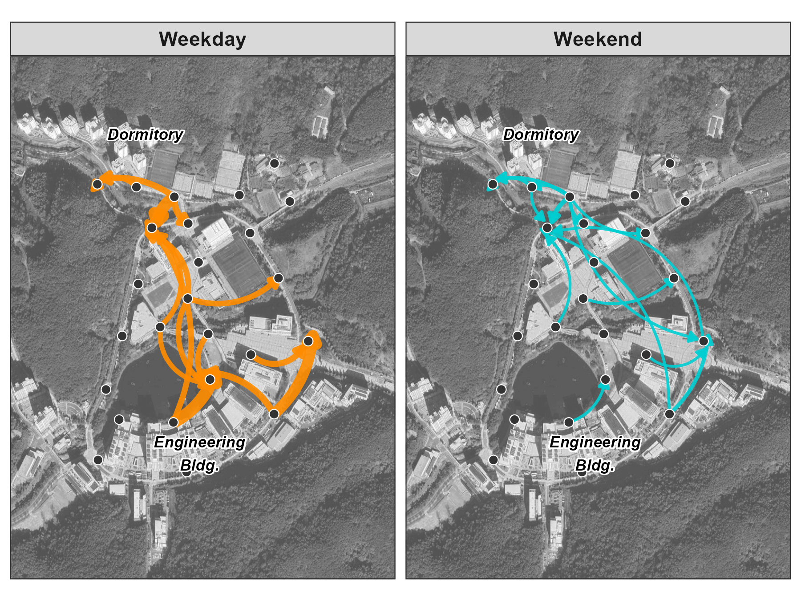
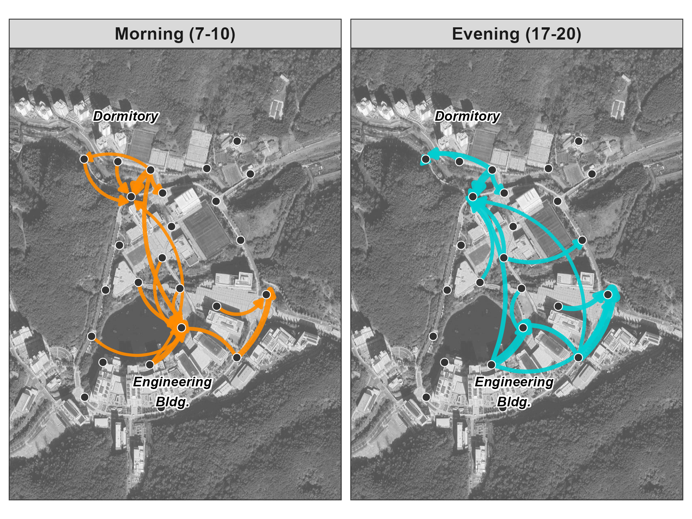

pacman::p_load(tidyverse, lubridate, arrow, sf, ggmap, ggrepel)9 Track
While Count answers “how many devices?”, Track answers “where did they go?” This chapter shows how to build origin-destination (OD) matrices and flow maps from WiFi detection data, revealing movement corridors across your study area.
The core concept is the trip: a sequence of detections for one device, bounded by gaps of inactivity. We define a 30-minute threshold—if a device isn’t detected for 30+ minutes, subsequent detections start a new trip. Each trip has an origin (first sensor) and destination (last sensor). Aggregating thousands of these OD pairs reveals which routes dominate and how they shift by time of day or day of week.
9.1 Setup
Prepare data
Download our sample dataset to follow along, or use your own WiFi detection data: sample_main.zip. The ZIP contains three files: wifi.parquet (WiFi detections), sensors.gpkg (sensor locations), and poi.gpkg (campus landmarks).
NoteAbout the sample dataset
Period: October 21 – November 15, 2019 (26 days) — spanning midterms, a campus interview event, and a school festival.
Location: UNIST campus, Ulsan, South Korea. 25 outdoor sensors covered dormitories, academic buildings, cafeteria, library, gym, and bus station.
Data structure:
| File | Rows | Columns |
|---|---|---|
wifi.parquet |
~2.8M | timestamp1, source_address, sensor_name |
sensors.gpkg |
25 | sensor_name, geom |
poi.gpkg |
5 | name, geom |
How we prepared this sample (see scripts/4-0-prep.R):
- Selected timestamps and sensor data from the full WiFi dataset
- Hashed MAC addresses (SHA-256, first 8 characters) for privacy
- Exported as Parquet for efficient storage
The figures in this chapter use the full 26-day dataset.
Load packages and data
Load required packages using pacman::p_load(), which installs any missing packages automatically:
Load the data files:
wifi_raw <- read_parquet("../data/sample_main/wifi.parquet")
sensors <- st_read("../data/sample_main/sensors.gpkg", quiet = TRUE)
poi <- st_read("../data/sample_main/poi.gpkg", quiet = TRUE)Configure basemap
Flow maps overlay movement data on a geographic basemap. Choose one of these options:
For satellite imagery, register a Google Maps API key:
register_google(key = "YOUR_API_KEY")
bbox <- st_bbox(sensors)
base_map <- get_map(
location = c(lon = mean(bbox[c(1,3)]), lat = mean(bbox[c(2,4)])),
zoom = 16, maptype = "satellite", source = "google"
)For a free alternative (no API key required):
bbox <- st_bbox(sensors)
base_map <- get_stadiamap(
bbox = c(left = bbox["xmin"], bottom = bbox["ymin"],
right = bbox["xmax"], top = bbox["ymax"]),
zoom = 16, maptype = "stamen_toner_lite"
)Extract sensor coordinates for plotting:
sensor_coords <- sensors |>
st_coordinates() |>
as_tibble() |>
bind_cols(sensors |> st_drop_geometry() |> select(sensor_name))
TipPreview loaded data
WiFi data — raw probe request detections:
head(wifi_raw, 3) timestamp1 source_address sensor_name
1 2019-11-06 21:30:00 b81d6d3a bus_station
2 2019-11-06 21:50:00 b81d6d3a bus_station
3 2019-11-07 06:00:00 b81d6d3a bus_stationtimestamp1: Detection time (aggregated to 10-minute windows)source_address: SHA-256 hashed device identifier (first 8 characters)sensor_name: Which sensor detected this device
Sensors — point geometries with location coordinates:
head(sensors, 5)Simple feature collection with 5 features and 1 field
Geometry type: POINT
Geodetic CRS: WGS 84
sensor_name geom
1 bus_station POINT (129.1918 35.57348)
2 108_front_outside POINT (129.1887 35.57197)
3 206_front POINT (129.1875 35.57202)
4 112_side POINT (129.187 35.57127)
5 104_back POINT (129.191 35.57212)POI — reference labels for the map:
poiSimple feature collection with 5 features and 1 field
Geometry type: POINT
Geodetic CRS: WGS 84
name geom
1 Dormitory POINT (129.1878 35.57708)
2 Library POINT (129.1879 35.5738)
3 Bus Station POINT (129.1919 35.57353)
4 Engineering Bldg. POINT (129.1897 35.57187)
5 Off-campus shops POINT (129.191 35.57672)9.2 Workflow
Define trips
First, segment the raw detections into trips. For each device, calculate the time gap between consecutive detections. When the gap exceeds 30 minutes, start a new trip:
gap_threshold <- 30 # minutes
trips <- wifi_raw |>
arrange(source_address, timestamp1) |>
group_by(source_address) |>
mutate(
time_gap = as.numeric(difftime(timestamp1, lag(timestamp1), units = "mins")),
new_trip = is.na(time_gap) | time_gap > gap_threshold,
trip_id = cumsum(new_trip)
) |>
ungroup()Extract OD pairs
For each trip, extract the origin (first sensor) and destination (last sensor). Filter out stationary trips (origin = destination) and single-detection trips:
od_pairs <- trips |>
group_by(source_address, trip_id) |>
summarise(
origin = first(sensor_name),
destination = last(sensor_name),
trip_start = min(timestamp1),
trip_end = max(timestamp1),
n_detections = n(),
.groups = "drop"
) |>
filter(
origin != destination,
n_detections >= 2
)Build OD matrix
Count trips between each sensor pair and compute transition probabilities. This creates an OD matrix showing how traffic flows between locations:
od_counts <- od_pairs |>
count(origin, destination, name = "n_trips")
od_probs <- od_counts |>
group_by(origin) |>
mutate(
total_from = sum(n_trips),
prob = n_trips / total_from
) |>
ungroup()
od_probs |>
filter(origin == "104_back") |>
arrange(desc(n_trips)) |>
head(3)# A tibble: 3 x 5
origin destination n_trips total_from prob
<chr> <chr> <int> <int> <dbl>
1 104_back bus_station 4058 10642 0.381
2 104_back lake 1845 10642 0.173
3 104_back TMB_back 1059 10642 0.100From the 104_back sensor (near dormitories), 38% of outbound trips go to the bus station—the main exit route. Another 17% head to the lake, a recreational area.
9.3 Flow map
Flow maps display OD pairs on a geographic basemap, with arrows showing direction and line thickness encoding volume. This visualization reveals which corridors carry the most traffic.
Select the top OD pairs and join with sensor coordinates:
top_n <- 5
edges_top <- od_probs |>
slice_max(n_trips, n = top_n) |>
left_join(sensor_coords, by = c("origin" = "sensor_name")) |>
rename(x_from = X, y_from = Y) |>
left_join(sensor_coords, by = c("destination" = "sensor_name")) |>
rename(x_to = X, y_to = Y)
edges_top |> select(origin, destination, n_trips)# A tibble: 5 x 3
origin destination n_trips
<chr> <chr> <int>
1 cafeteria_dorm_side TMB_back 4638
2 108_front_outside lake 4243
3 104_back bus_station 4058
4 cafeteria_dorm_side gym_front 3623
5 cafeteria_dorm_side parking_dorm 3496Plot the flow map with curved arrows:
# Get labels for sensors in top flows
od_sensors <- unique(c(edges_top$origin, edges_top$destination))
sensor_labels <- sensor_coords |>
filter(sensor_name %in% od_sensors)
ggmap(base_map, darken = c(0.3, "white")) +
geom_curve(data = edges_top,
aes(x = x_from, y = y_from, xend = x_to, yend = y_to),
linewidth = edges_top$n_trips / max(edges_top$n_trips) * 3,
color = "#2c7bb6", curvature = 0.3, alpha = 0.85,
arrow = arrow(length = unit(0.2, "cm"), type = "closed")) +
geom_point(data = sensor_labels, aes(x = X, y = Y),
size = 2.5, color = "#d7191c") +
geom_text_repel(data = sensor_labels, aes(x = X, y = Y, label = sensor_name),
size = 2.5, fontface = "bold.italic") +
theme_void()
NoteInterpreting the flow patterns
The top three corridors reveal campus structure:
- cafeteria_dorm_side → TMB_back (4,638 trips): Dining-to-research building, the dominant daily routine
- 108_front_outside → lake (4,243 trips): Residences to lakeside recreation
- 104_back → bus_station (4,058 trips): Dormitories to public transit exit
The cafeteria and dormitory areas function as central hubs, with other destinations branching outward.
9.4 Temporal patterns
Movement patterns vary by time—weekdays vs weekends, morning vs evening. Segmenting OD pairs by temporal context reveals how space usage shifts with daily and weekly rhythms.
Weekday vs Weekend
Split OD pairs by day type to compare routine weekday flows against sparser weekend patterns:
od_by_daytype <- od_pairs |>
mutate(day_type = if_else(wday(trip_start) %in% c(1, 7), "Weekend", "Weekday")) |>
count(origin, destination, day_type, name = "n_trips")
# Top 3 routes per day type
od_by_daytype |>
group_by(day_type) |>
slice_max(n_trips, n = 3)# A tibble: 6 x 4
day_type origin destination n_trips
<chr> <chr> <chr> <int>
1 Weekday 108_front_outside lake 3981
2 Weekday cafeteria_dorm_side TMB_back 3731
3 Weekday 104_back bus_station 3493
4 Weekend cafeteria_dorm_side TMB_back 907
5 Weekend cafeteria_dorm_side parking_dorm 585
6 Weekend 104_back bus_station 565
NoteWeekday vs Weekend differences
| Rank | Weekday | Weekend |
|---|---|---|
| 1 | 108_front → lake (3,981) | cafeteria → TMB (907) |
| 2 | cafeteria → TMB (3,731) | cafeteria → parking (585) |
| 3 | 104_back → bus (3,493) | 104_back → bus (565) |
Key observations:
- Volume: Weekday top route (3,981 trips) is 7× higher than weekend top (907)
- Transit decline: Bus station drops from #3 weekday destination—fewer commuters on weekends
- Parking rise: Emerges as #2 on weekends—residents switch to personal vehicles
- Research persistence: Cafeteria → TMB remains #1 even on weekends, likely graduate students
Morning vs Evening
Comparing morning (7-10am) and evening (5-8pm) flows on weekdays reveals commute directionality:
od_time_period <- od_pairs |>
filter(wday(trip_start) %in% 2:6) |> # weekdays only
mutate(
hour = hour(trip_start),
time_period = case_when(
hour >= 7 & hour < 10 ~ "Morning (7-10)",
hour >= 17 & hour < 20 ~ "Evening (17-20)",
TRUE ~ NA_character_
)
) |>
filter(!is.na(time_period)) |>
count(origin, destination, time_period, name = "n_trips")
# Top 3 routes per time period
od_time_period |>
group_by(time_period) |>
slice_max(n_trips, n = 3)# A tibble: 6 x 4
time_period origin destination n_trips
<chr> <chr> <chr> <int>
1 Evening (17-20) 104_back bus_station 1028
2 Evening (17-20) 108_front_outside lake 757
3 Evening (17-20) cafeteria_dorm_side TMB_back 644
4 Morning (7-10) cafeteria_dorm_side TMB_back 550
5 Morning (7-10) 104_back bus_station 444
6 Morning (7-10) 108_front_outside lake 384
NoteMorning vs Evening asymmetry
| Rank | Morning (7-10) | Evening (17-20) |
|---|---|---|
| 1 | cafeteria → TMB (550) | 104_back → bus (1,028) |
| 2 | 104_back → bus (444) | 108_front → lake (757) |
| 3 | 108_front → lake (384) | cafeteria → TMB (644) |
The data reveals directional asymmetry:
- Bus station: Evening volume (1,028) is 2.3× morning (444)—more departures than arrivals
- Morning: Dispersal from dormitories to classes, research buildings, dining
- Evening: Convergence toward transit exit
Many students arrive by other means (walking, drop-off) but depart by bus. The campus functions as a daytime destination with a transit-dependent evening exodus.